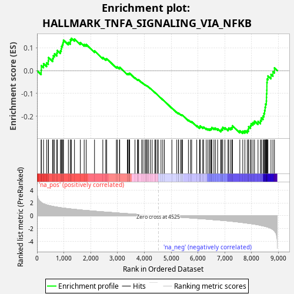
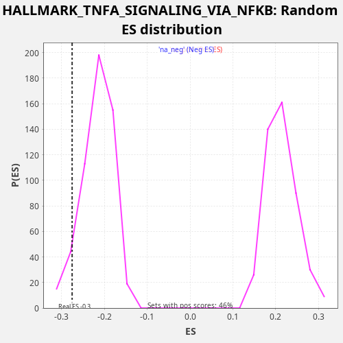

| Dataset | star_PE_rank_metric |
| Phenotype | NoPhenotypeAvailable |
| Upregulated in class | na_neg |
| GeneSet | HALLMARK_TNFA_SIGNALING_VIA_NFKB |
| Enrichment Score (ES) | -0.27548024 |
| Normalized Enrichment Score (NES) | -1.2741915 |
| Nominal p-value | 0.060661763 |
| FDR q-value | 0.17982295 |
| FWER p-Value | 0.92 |

| SYMBOL | RANK IN GENE LIST | RANK METRIC SCORE | RUNNING ES | CORE ENRICHMENT | |
|---|---|---|---|---|---|
| 1 | IFIT2 | 154 | 2.115 | 0.0028 | No |
| 2 | SPSB1 | 160 | 2.092 | 0.0222 | No |
| 3 | MARCKS | 242 | 1.873 | 0.0309 | No |
| 4 | IRS2 | 357 | 1.706 | 0.0343 | No |
| 5 | PANX1 | 419 | 1.634 | 0.0430 | No |
| 6 | KLF9 | 428 | 1.625 | 0.0576 | No |
| 7 | BTG1 | 584 | 1.469 | 0.0541 | No |
| 8 | DUSP5 | 607 | 1.454 | 0.0655 | No |
| 9 | CXCL6 | 653 | 1.420 | 0.0740 | No |
| 10 | ETS2 | 739 | 1.360 | 0.0774 | No |
| 11 | DUSP4 | 754 | 1.348 | 0.0887 | No |
| 12 | EGR3 | 873 | 1.273 | 0.0875 | No |
| 13 | BCL3 | 901 | 1.255 | 0.0964 | No |
| 14 | NFIL3 | 915 | 1.242 | 0.1068 | No |
| 15 | PLEK | 945 | 1.232 | 0.1153 | No |
| 16 | SNN | 968 | 1.218 | 0.1244 | No |
| 17 | PER1 | 986 | 1.211 | 0.1341 | No |
| 18 | LITAF | 1168 | 1.112 | 0.1242 | No |
| 19 | RHOB | 1241 | 1.077 | 0.1263 | No |
| 20 | SOD2 | 1244 | 1.074 | 0.1364 | No |
| 21 | ATP2B1 | 1284 | 1.055 | 0.1420 | No |
| 22 | PTGS2 | 1396 | 1.005 | 0.1391 | No |
| 23 | DENND5A | 1613 | 0.919 | 0.1234 | No |
| 24 | B4GALT5 | 1758 | 0.854 | 0.1153 | No |
| 25 | ZBTB10 | 1833 | 0.828 | 0.1148 | No |
| 26 | TNFAIP6 | 2143 | 0.723 | 0.0868 | No |
| 27 | PDLIM5 | 2453 | 0.613 | 0.0576 | No |
| 28 | RCAN1 | 2561 | 0.581 | 0.0511 | No |
| 29 | PLAU | 2598 | 0.569 | 0.0525 | No |
| 30 | SLC2A3 | 2959 | 0.451 | 0.0160 | No |
| 31 | SERPINB8 | 2992 | 0.438 | 0.0166 | No |
| 32 | IFNGR2 | 3072 | 0.419 | 0.0117 | No |
| 33 | TNIP1 | 3083 | 0.416 | 0.0145 | No |
| 34 | RIPK2 | 3368 | 0.331 | -0.0145 | No |
| 35 | PDE4B | 3386 | 0.327 | -0.0133 | No |
| 36 | GADD45A | 3428 | 0.315 | -0.0149 | No |
| 37 | EIF1 | 3433 | 0.313 | -0.0124 | No |
| 38 | GCH1 | 3455 | 0.307 | -0.0118 | No |
| 39 | LDLR | 3653 | 0.251 | -0.0317 | No |
| 40 | RELB | 3748 | 0.226 | -0.0402 | No |
| 41 | FOSL2 | 3761 | 0.223 | -0.0394 | No |
| 42 | CD80 | 3788 | 0.217 | -0.0403 | No |
| 43 | CD83 | 3903 | 0.180 | -0.0515 | No |
| 44 | BHLHE40 | 3951 | 0.169 | -0.0552 | No |
| 45 | JAG1 | 4021 | 0.152 | -0.0615 | No |
| 46 | LAMB3 | 4063 | 0.141 | -0.0648 | No |
| 47 | BMP2 | 4072 | 0.138 | -0.0644 | No |
| 48 | IL23A | 4110 | 0.128 | -0.0674 | No |
| 49 | STAT5A | 4156 | 0.113 | -0.0714 | No |
| 50 | EHD1 | 4223 | 0.093 | -0.0780 | No |
| 51 | JUN | 4292 | 0.073 | -0.0850 | No |
| 52 | TANK | 4395 | 0.042 | -0.0961 | No |
| 53 | PLK2 | 4422 | 0.033 | -0.0987 | No |
| 54 | DUSP1 | 4479 | 0.014 | -0.1049 | No |
| 55 | BIRC2 | 4522 | 0.001 | -0.1097 | No |
| 56 | NR4A2 | 4623 | -0.027 | -0.1207 | No |
| 57 | TRAF1 | 4689 | -0.046 | -0.1276 | No |
| 58 | GFPT2 | 4748 | -0.063 | -0.1336 | No |
| 59 | ZC3H12A | 5028 | -0.142 | -0.1638 | No |
| 60 | NINJ1 | 5212 | -0.194 | -0.1827 | No |
| 61 | BTG3 | 5276 | -0.207 | -0.1878 | No |
| 62 | KLF10 | 5278 | -0.207 | -0.1860 | No |
| 63 | SQSTM1 | 5361 | -0.232 | -0.1930 | No |
| 64 | OLR1 | 5394 | -0.244 | -0.1943 | No |
| 65 | NAMPT | 5427 | -0.253 | -0.1955 | No |
| 66 | IL18 | 5644 | -0.316 | -0.2169 | No |
| 67 | NR4A3 | 5723 | -0.340 | -0.2225 | No |
| 68 | TRIB1 | 5766 | -0.352 | -0.2239 | No |
| 69 | BTG2 | 5956 | -0.410 | -0.2414 | No |
| 70 | IL6ST | 6059 | -0.443 | -0.2487 | No |
| 71 | KYNU | 6080 | -0.449 | -0.2467 | No |
| 72 | NFAT5 | 6081 | -0.450 | -0.2424 | No |
| 73 | SMAD3 | 6179 | -0.481 | -0.2487 | No |
| 74 | NR4A1 | 6211 | -0.492 | -0.2475 | No |
| 75 | SOCS3 | 6309 | -0.516 | -0.2536 | No |
| 76 | EGR2 | 6373 | -0.538 | -0.2556 | No |
| 77 | KDM6B | 6430 | -0.558 | -0.2566 | No |
| 78 | EGR1 | 6469 | -0.575 | -0.2554 | No |
| 79 | CCND1 | 6504 | -0.589 | -0.2536 | No |
| 80 | NFKBIE | 6518 | -0.593 | -0.2494 | No |
| 81 | CD44 | 6596 | -0.623 | -0.2522 | No |
| 82 | F2RL1 | 6650 | -0.639 | -0.2521 | No |
| 83 | TIPARP | 6734 | -0.667 | -0.2551 | No |
| 84 | HBEGF | 6853 | -0.703 | -0.2618 | No |
| 85 | PPP1R15A | 6874 | -0.708 | -0.2573 | No |
| 86 | ID2 | 6919 | -0.724 | -0.2553 | No |
| 87 | TNFAIP3 | 6924 | -0.727 | -0.2488 | No |
| 88 | CFLAR | 7006 | -0.758 | -0.2508 | No |
| 89 | MSC | 7122 | -0.802 | -0.2561 | No |
| 90 | JUNB | 7152 | -0.818 | -0.2516 | No |
| 91 | MYC | 7225 | -0.846 | -0.2516 | No |
| 92 | FOS | 7273 | -0.871 | -0.2486 | No |
| 93 | DRAM1 | 7288 | -0.876 | -0.2419 | No |
| 94 | BIRC3 | 7562 | -1.005 | -0.2631 | No |
| 95 | TGIF1 | 7672 | -1.065 | -0.2653 | Yes |
| 96 | CDKN1A | 7751 | -1.106 | -0.2636 | Yes |
| 97 | NFKB2 | 7839 | -1.160 | -0.2623 | Yes |
| 98 | PFKFB3 | 7883 | -1.181 | -0.2559 | Yes |
| 99 | B4GALT1 | 7890 | -1.186 | -0.2453 | Yes |
| 100 | SLC2A6 | 7960 | -1.225 | -0.2414 | Yes |
| 101 | SGK1 | 7984 | -1.236 | -0.2322 | Yes |
| 102 | ATF3 | 8051 | -1.278 | -0.2274 | Yes |
| 103 | CSF1 | 8110 | -1.322 | -0.2214 | Yes |
| 104 | SERPINE1 | 8241 | -1.413 | -0.2226 | Yes |
| 105 | INHBA | 8332 | -1.498 | -0.2185 | Yes |
| 106 | MCL1 | 8363 | -1.530 | -0.2072 | Yes |
| 107 | BCL6 | 8427 | -1.583 | -0.1993 | Yes |
| 108 | MAP2K3 | 8461 | -1.614 | -0.1876 | Yes |
| 109 | RELA | 8486 | -1.640 | -0.1746 | Yes |
| 110 | GEM | 8504 | -1.662 | -0.1607 | Yes |
| 111 | SDC4 | 8522 | -1.679 | -0.1466 | Yes |
| 112 | NFKB1 | 8550 | -1.709 | -0.1333 | Yes |
| 113 | IL15RA | 8556 | -1.718 | -0.1175 | Yes |
| 114 | EDN1 | 8559 | -1.722 | -0.1012 | Yes |
| 115 | MAFF | 8568 | -1.732 | -0.0856 | Yes |
| 116 | MXD1 | 8571 | -1.739 | -0.0692 | Yes |
| 117 | GADD45B | 8572 | -1.741 | -0.0526 | Yes |
| 118 | KLF4 | 8581 | -1.750 | -0.0368 | Yes |
| 119 | NFKBIA | 8611 | -1.778 | -0.0231 | Yes |
| 120 | IER3 | 8724 | -1.980 | -0.0168 | Yes |
| 121 | IRF1 | 8796 | -2.158 | -0.0043 | Yes |
| 122 | ICAM1 | 8853 | -2.367 | 0.0120 | Yes |
